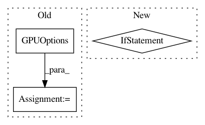

69d9220f450db20ce2e43a7c7f095b4d891565cc,tensorlayer/utils.py,,set_gpu_fraction,#Any#,634
Before Change
tl.logging.info("[TL]: GPU MEM Fraction %f" % gpu_fraction)
gpu_options = tf.GPUOptions(per_process_gpu_memory_fraction=gpu_fraction)
sess = tf.Session(config=tf.ConfigProto(gpu_options=gpu_options))
return sess
After Change
tl.logging.info("[TL]: GPU MEM Fraction %f" % gpu_fraction)
if gpu_fraction is None:
tf.config.gpu.set_per_process_memory_growth()
else:
tf.config.gpu.set_per_process_memory_fraction(0.4)
// gpu_options = tf.GPUOptions(per_process_gpu_memory_fraction=gpu_fraction)
// sess = tf.Session(config=tf.ConfigProto(gpu_options=gpu_options))
// return sess
def train_epoch(network, X, y, cost, train_op=tf.optimizers.Adam(learning_rate=0.0001),
acc=None, batch_size=100, shuffle=True):
Training a given non time-series network by the given cost function, training data, batch_size etc.
for one epoch.
In pattern: SUPERPATTERN
Frequency: 4
Non-data size: 3
Instances
Project Name: tensorlayer/tensorlayer
Commit Name: 69d9220f450db20ce2e43a7c7f095b4d891565cc
Time: 2019-04-17
Author: rundi_wu@pku.edu.cn
File Name: tensorlayer/utils.py
Class Name:
Method Name: set_gpu_fraction
Project Name: CyberReboot/NetworkML
Commit Name: e2226f604c7f6444630be324d06a8130a01f3366
Time: 2018-01-22
Author: CStephenson970@gmail.com
File Name: NodeClassifier/utils/rnnclassifier.py
Class Name: AbnormalDetector
Method Name: __init__
Project Name: rail-berkeley/softlearning
Commit Name: 65878bf34c16e45b6ffaedef305fa260cf474498
Time: 2018-01-23
Author: haarnoja@users.noreply.github.com
File Name: softqlearning/misc/tf_utils.py
Class Name:
Method Name: get_configuration
Project Name: OpenNMT/OpenNMT-tf
Commit Name: 56eb956febb92a599a4d45030eb1a7cf2f843237
Time: 2019-06-19
Author: guillaume.klein@systrangroup.com
File Name: opennmt/bin/main.py
Class Name:
Method Name: main